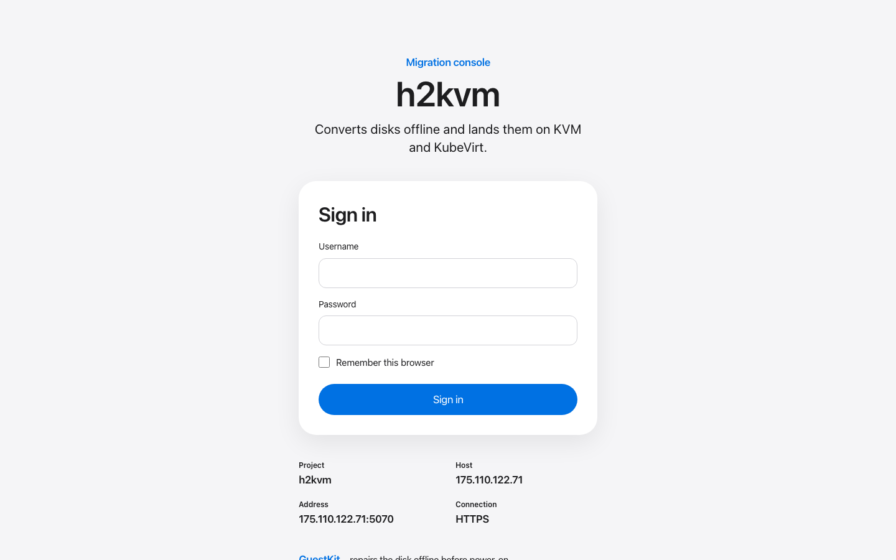
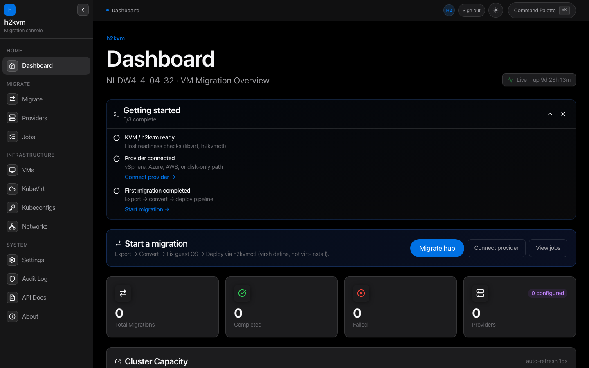
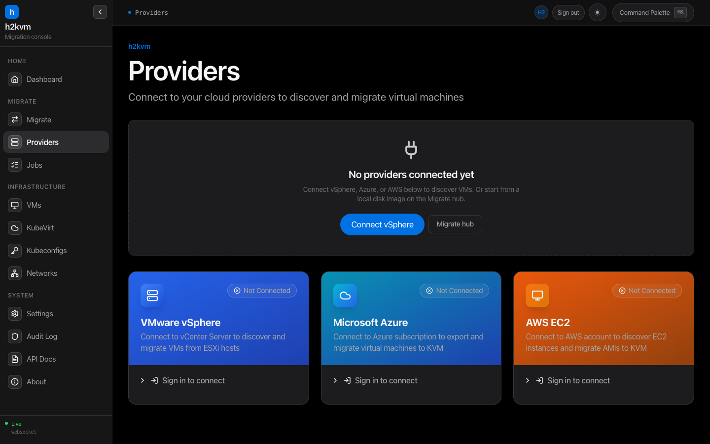
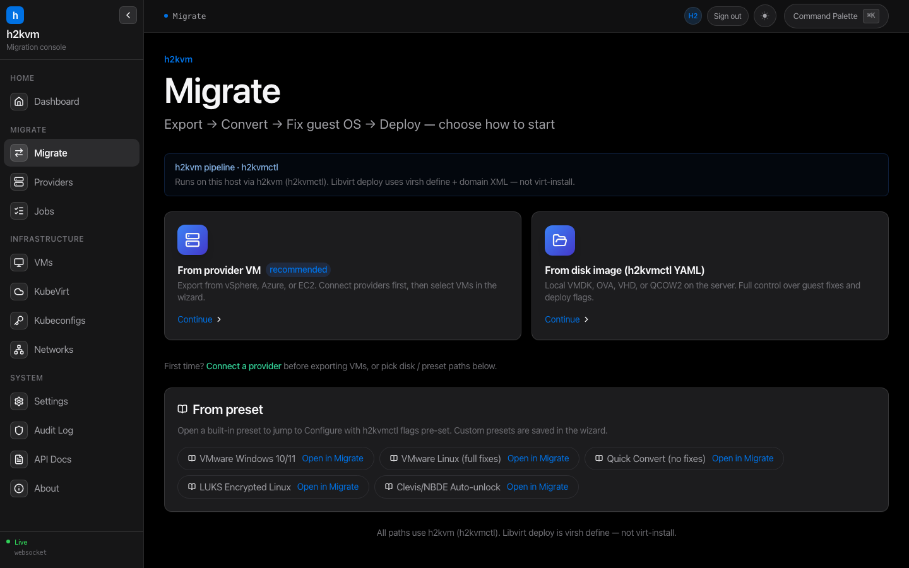
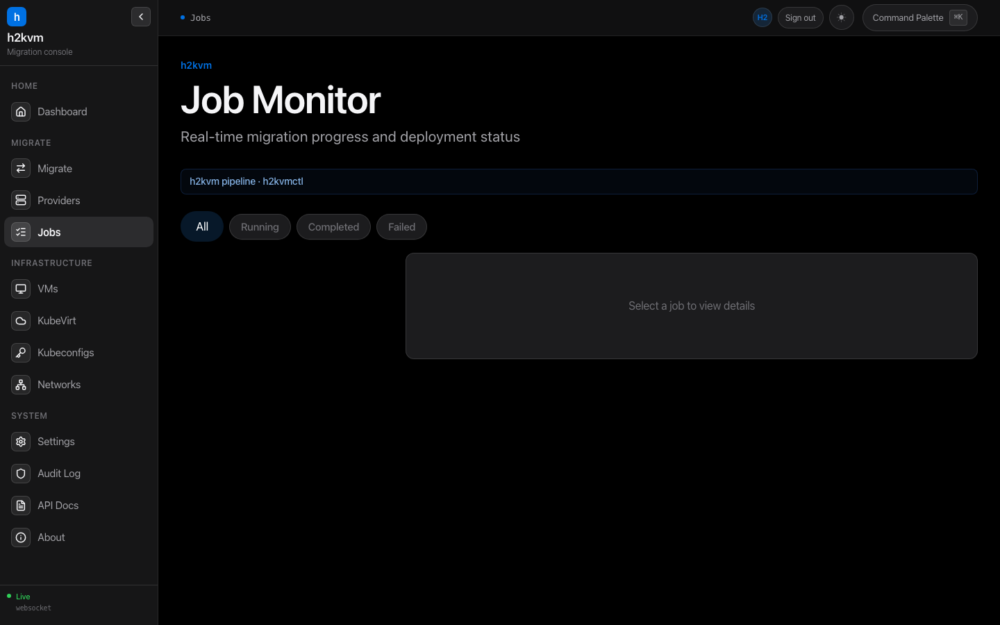
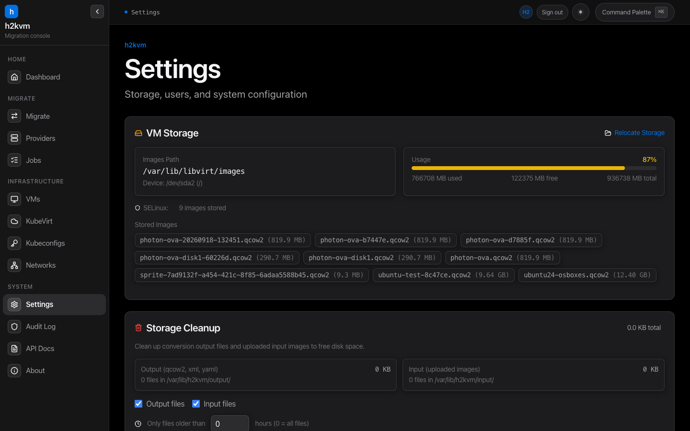

h2kweb Dashboard
Live Screenshots — Production Server
Captured from Worldstream bare-metal (AlmaLinux 9.7)
http://185.165.240.5:5070
April 1, 2026 — 3 VMs migrated & running
1. Login Page — PAM Authentication
System-level authentication using Linux PAM. Same credentials as SSH. Glassmorphism UI with gradient logo.
http://185.165.240.5:5070

PAM authentication
HttpOnly cookies
SameSite=Strict
32-byte random tokens
Username validation
2. Dashboard — Real-time Host Monitoring
Live CPU/RAM/disk metrics, migration pipeline, libvirt VM status, system info, and health checks.
http://185.165.240.5:5070/

8-core Xeon E3-1230 v6
15.6 GB RAM (47%)
219 GB disk (94%)
3 VMs running
Load avg 4.59
QEMU 9.1.0
KVM enabled
WebSocket live
3. Providers — Multi-Cloud VM Discovery
3 dedicated provider cards with gradient headers, login forms, and integrated VM browser after connecting.
http://185.165.240.5:5070/providers

VMware vSphere (govmomi)
Microsoft Azure (az CLI)
AWS EC2 (aws CLI)
VM browser with search
Multi-select for batch
4. Migration Wizard — Source Selection
4 source types: Local File browser, VMware vSphere, Azure, EC2. 3-step wizard with full YAML config.
http://185.165.240.5:5070/migrate

Local file browser
VMDK / OVA / VHD
Flatten + Compress ON
initramfs + GRUB ON
Libvirt auto-deploy ON
KubeVirt deploy
YAML preview
All h2kvmctl options
5. Job Monitor — Live Logs & Deployment
Real completed migration: Ubuntu Server 25.04 — LVM detected, initramfs rebuilt, deployed to libvirt with IP.
http://185.165.240.5:5070/jobs

ubuntu-server2504: completed (2m 22s)
Libvirt: running
IP: 192.168.122.136
386 log lines streamed
WebSocket real-time
Copy IP / SSH link
Auto-scroll logs
6. Settings & Service Management
Server configuration reference and systemd service management commands.
http://185.165.240.5:5070/settings

--binary (auto-detect)
--addr :5070
--api-key
--static-dir
systemctl status h2kweb
journalctl -u h2kweb -f